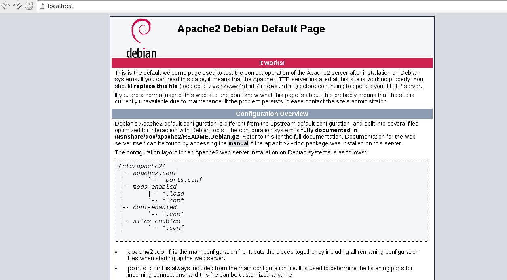
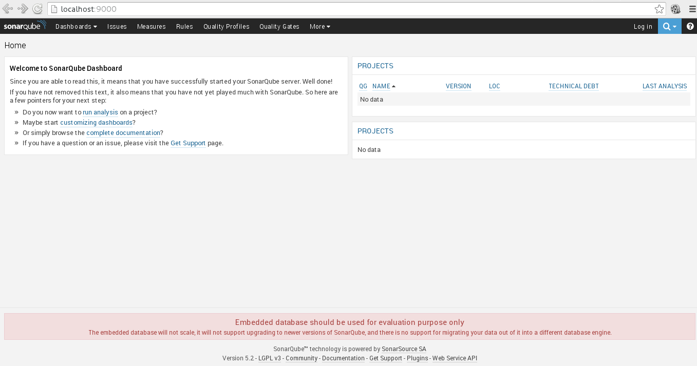

Uso de docker en Debian Jessie (parte 2)
Posted on lun 28 diciembre 2015 in Tutorial Linux • 3 min read
Los artículos anteriores sobre docker son:
En este artículo se explicará como mantener ejecutando una instancia, como iniciar las instancias automáticamente, acceder a los servicios que se ejecutan en el contenedor y ejecutar la imagen desde diferentes máquinas al registrar el contenedor.
Del artículo anterior se tiene 2 imagenes en el equipo, una de Debian y la otra creada por mi persona que viene del repositorio de docker hub:
$ docker images
REPOSITORY TAG IMAGE ID CREATED VIRTUAL SIZE
ecrespo/empaquetadodebian latest ee5883957d64 18 hours ago 656.9 MB
debian latest 8b9a99209d5c 3 weeks ago 125.1 MB
Para ejecutar apache y que quede funcionando en primer plano de la imagen que se construyo, se usa la opción -D y la -d para que se ejecute sin adjuntar.
$docker run -d ecrespo/empaquetadodebian /usr/sbin/apache2ctl -D FOREGROUND
eeb8041b4331e572b3e452fc00da5d364115ba8a08ad015aa05eb1d243a1bf4b
Como se nota devuelve un hash. Ahora se revisan los procesos del docker y se tiene el contenedor con apachectl ejecutandose:
$ docker ps
CONTAINER ID IMAGE COMMAND CREATED STATUS PORTS NAMES
eeb8041b4331 ecrespo/empaquetadodebian "/usr/sbin/apache2ctl" 4 minutes ago Up 4 minutes tender_goodall
Para detener un proceso se toma el id del contenedor ejecutando docker stop:
$ docker stop eeb8041b4331
eeb8041b4331
Al volver a listar los procesos se tiene que ya no hay contenedores corriendo:
$ docker ps
CONTAINER ID IMAGE COMMAND CREATED STATUS PORTS NAMES
$ docker run -d -p 80:80 ecrespo/empaquetadodebian /usr/sbin/apache2ctl -D FOREGROUND
8c7d49ac2e671e0f7dd1bbfb038f5a23ff06e3120d07d059c0cde99dc76f1a79
Al volver a listar los procesos se tiene el contenedor corriendo apache2ctl en el puerto 80:
$ docker ps
CONTAINER ID IMAGE COMMAND CREATED STATUS PORTS NAMES
8c7d49ac2e67 ecrespo/empaquetadodebian "/usr/sbin/apache2ctl" 51 seconds ago Up 45 seconds 0.0.0.0:80->80/tcp stupefied_darwin
A continuación se abre el navegador a localhost (ojo el servicio apache debe estar apagado en el equipo) y se tiene apache corriendo como se muestra a continuación:

Se sube la imagen a los repositorios con el comando docker push:
$ docker push ecrespo/empaquetadodebian
The push refers to a repository [docker.io/ecrespo/empaquetadodebian] (len: 1)
ee5883957d64: Pushed
8b9a99209d5c: Pushed
6d1ae97ee388: Pushed
latest: digest: sha256:893cb08536430d5555434bb4b120fb54e9f21da7cd87325120c1698aa57e2882 size: 4009
También se puede probar una aplicación como por ejemplo sonarqube el cual es una aplicación web hace métricas de calidad de software. La imagen la encuentran en el docker hub de sonarqube.
Se puede ejecutar sonarqube con los puertos 9000 y 9092 de la siguiente forma:
$ docker run -d --name sonarqube -p 9000:9000 -p 9092:9092 sonarqube
Al terminar de descargar se ejecuta docker images y se nota que se tiene la imagen de sonarqube:
$ docker images
REPOSITORY TAG IMAGE ID CREATED VIRTUAL SIZE
ecrespo/empaquetadodebian latest ee5883957d64 23 hours ago 656.9 MB
debian latest 8b9a99209d5c 3 weeks ago 125.1 MB
sonarqube latest dd47274097f7 7 weeks ago 942.5 MB
Se revisan los contenedores:
$ docker ps
CONTAINER ID IMAGE COMMAND CREATED STATUS PORTS NAMES
f44317723253 sonarqube "./bin/run.sh" 8 minutes ago Up 7 minutes 0.0.0.0:9000->9000/tcp, 0.0.0.0:9092->9092/tcp sonarqube
8c7d49ac2e67 ecrespo/empaquetadodebian "/usr/sbin/apache2ctl" 3 hours ago Up 3 hours 0.0.0.0:80->80/tcp stupefied_darwin
Se tiene sonarqube corriendo en el puerto 9000, al abrir el navegador en localhost:9000 se tiene lo siguiente:

Se detiene el contenedor de sonarqube:
$ docker stop f44317723253
f44317723253
Se revisan los procesos y ya no aparece sonarqube:
$ docker ps
CONTAINER ID IMAGE COMMAND CREATED STATUS PORTS NAMES
8c7d49ac2e67 ecrespo/empaquetadodebian "/usr/sbin/apache2ctl" 3 hours ago Up 3 hours 0.0.0.0:80->80/tcp stupefied_darwin
Si se quiere iniciar sonarqube se ejecuta docker start con el id del contenedor:
$ docker start f44317723253
f44317723253
Se lista de nuevo:
$ docker ps
CONTAINER ID IMAGE COMMAND CREATED STATUS PORTS NAMES
f44317723253 sonarqube "./bin/run.sh" 22 minutes ago Up About a minute 0.0.0.0:9000->9000/tcp, 0.0.0.0:9092->9092/tcp sonarqube
8c7d49ac2e67 ecrespo/empaquetadodebian "/usr/sbin/apache2ctl" 3 hours ago Up 3 hours 0.0.0.0:80->80/tcp stupefied_darwin
Se nota que sonarqube vuelve a levantar ya con los puertos definidos.
En el próximo artículo se explicará como construir una imagen por medio del archivo dockerfile.
Referencias:
1. Getting Started with Docker
2. Docker y sonarqube.
¡Haz tu donativo! Si te gustó el artículo puedes realizar un donativo con Bitcoin (BTC) usando la billetera digital de tu preferencia a la siguiente dirección: 17MtNybhdkA9GV3UNS6BTwPcuhjXoPrSzV
O Escaneando el código QR desde la billetera: